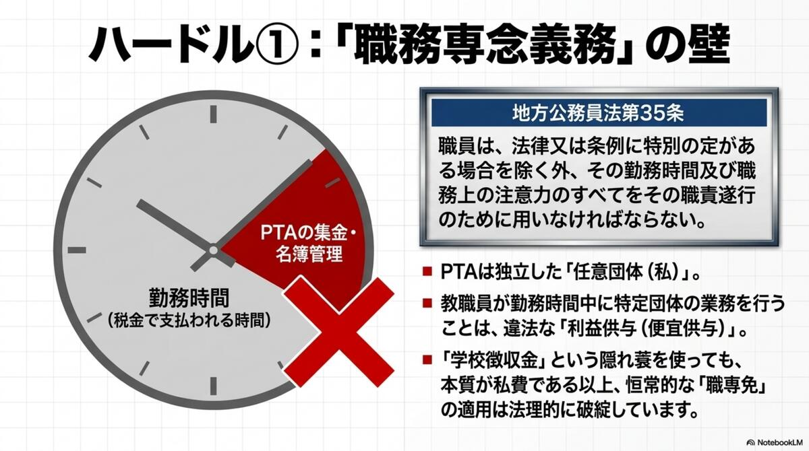
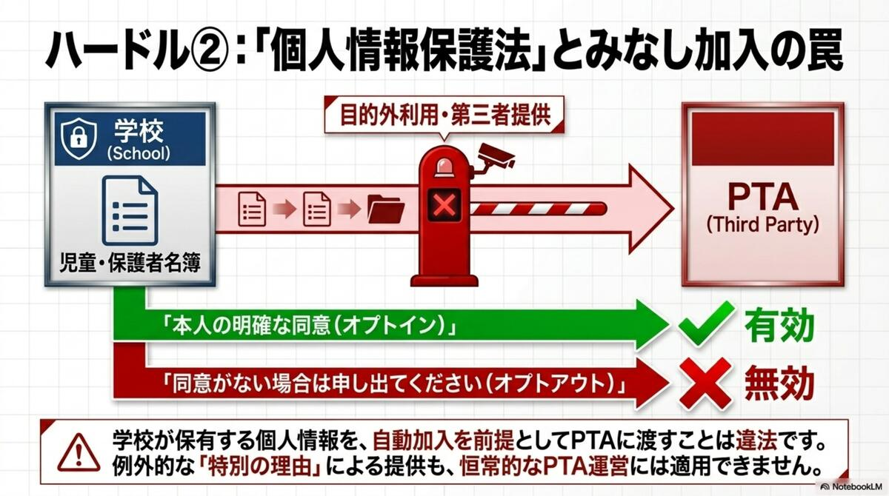
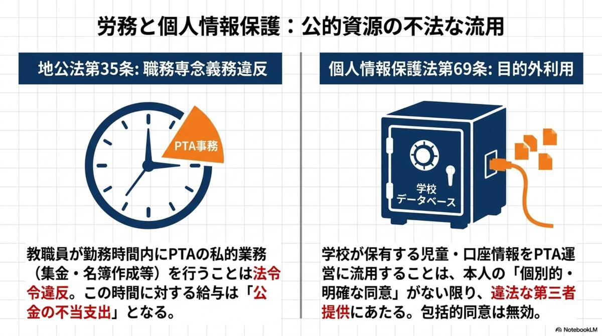

👩🏫 Issue 04 — Personnel
教職員関与と
職務専念義務
勤務時間中に教職員がPTA事務を担うことは、地方公務員法第35条の職務専念義務違反です。唯一許容される接点は「渉外業務（学校↔PTA間の連絡調整）」だけです。
問題の核心：「税金で雇われた時間」でPTA事務をすることの矛盾
教職員は地方公務員です。勤務時間中に支払われる給与は公金（税金）です。その時間を、任意団体であるPTAの会費集計・名簿管理・封筒仕分けなど「私的団体の業務」に充てることは、地方公務員法第35条（職務専念義務）に違反します。
これは「ちょっとした手伝い」の問題ではありません。構造的に毎年・全国で繰り返されているため、「恒常的な違法状態」として認定される可能性があります。全国の教育委員会への照会において「PTA事務は公務である」と回答した教育委員会は一件もありませんでした。
地方公務員法 第35条
職員は、法律又は条例に特別の定がある場合を除く外、その勤務時間及び職務上の注意力のすべてをその職責遂行のために用い、当該地方公共団体がなすべき責を有する職務にのみ従事しなければならない。
⚠️
PTAは独立した「任意団体（私）」。教職員が勤務時間中に特定団体の業務を行うことは、違法な利益供与（便宜供与）にあたります。
スライド解説：職務専念義務と個人情報保護
以下のスライドは、会費徴収・個人情報保護と職務専念義務の関係を図解したものです。クリックで拡大できます。

ハードル①：「職務専念義務」の壁（地方公務員法第35条）

ハードル②：「個人情報保護法」とみなし加入の罠

労務と個人情報保護：公的資源の不法な流用（地公法35条・個人情報保護法69条）
※スライドはNotebookLMを使用して作成。

何はOKで、何はNGか——渉外業務の範囲
「一切の関与禁止」ではありません。渉外業務（学校↔PTA間の連絡調整窓口）だけが唯一許容される接点です。
✅ 渉外業務として許容
✓PTAからの行事協力依頼の受付・校長への取次ぎ
✓学校行事日程等の公開情報のPTAへの提供
✓PTAと校長の定期連絡会議への参加
✓PTA主催行事への校長の来賓参加
❌ 渉外業務を超える違法な関与
✗担任がPTA封筒・配布物を配布・回収する
✗事務職員がPTA会費の集計・処理を行う
✗学校名簿をPTAに提供する
✗学校印刷機でPTA文書を印刷する
✗会費引落しを学校名義口座で行う
✗校長・教頭がPTAの役員として議決権を持つ
✗副校長がPTA人事・予算を実質決定する
「職専免」による公務化——川崎市・仙台市モデルの矛盾
一部の自治体は、PTA事務を「職務専念義務免除（職専免）」によって教職員が勤務時間中に行えるよう制度化しています（川崎市・仙台市の要綱など）。しかし、この対応には根本的な矛盾があります。
⚠️ 職専免モデルの根本的矛盾
職専免はPTAへの「入会契約」が成立していることを前提に機能します。しかしみなし加入状態では入会契約が無効です。無効な契約を前提とした委任・職専免は、「無効な契約の公務化」という二重の矛盾を生みます。
📋 適法な職専免の要件
①PTAとの正式な業務委任契約（毎年度更新）、②保護者の個別同意取得（会費徴収代理のための別途委任状）、③職専免の厳格な事前申請・承認記録——3条件すべてが必要。いずれかが欠けていれば違法状態のままです。
全国の教育委員会への照会では、川崎市・仙台市を除き、ほとんどの自治体が「勤務時間外に行うよう指導」または「関与しない立場」と回答しています（詳細は教育委員会の回答ページ）。
行政実例：昭和39年「熊本県教育長宛」——PTA事務は職務外
昭和39年1月20日付の熊本県教育長宛行政実例では、「PTA等任意団体の事務は、学校教職員の職務には含まれない」とする行政解釈が示されています。これは60年以上前から一貫した解釈であり、「慣習だから」「昔からそうだから」は法的根拠になりません。
昭和39年1月20日 行政実例（熊本県教育長宛）
「PTA等学校関係団体が実施する事業は、学校の教職員の職務とは異なるものであり、学校職員がこれに従事することは、通常の職務遂行ということにはならない。」
※行政実例は法令ではなく行政解釈ですが、職務専念義務の解釈において長年参照されてきた基礎資料です。
全国教育委員会の回答——「PTA事務は公務ではない」が全国的傾向
PTA適正化推進委員会が実施した全国照会では、職務専念義務に関して以下のような回答が得られています。
高槻市教育委員会（教職員課）
「教職員がPTAの立場として行う業務は、勤務時間外に行うよう指導している。」
豊浦町教育委員会（北海道）
「教育委員会は、学校におけるPTA活動に関与しない立場。」
東京都教育庁（高等学校教育課）
「学校とPTAは組織として独立した別主体であるとの基本認識を示した。都立学校管理運営規則にはPTAに関する直接の規定はなく、学校がPTA活動を義務づける法的根拠はない。」
川崎市教育委員会 ⚠️
「要綱によりPTA会費の収納等に関する事務について校務として定め、PTA代表者から市への委任に基づき学校が処理できるものとしている。」（委任契約モデルで継続——ただし矛盾あり）
全回答の詳細は教育委員会の回答ページで確認できます。
よくある疑問
よくある質問
担任の先生がPTA封筒の仕分けをしています。違法ですか？
▼
勤務時間中の従事であれば地公法35条の職務専念義務違反にあたります。「ちょっとした手伝い」も、恒常的・組織的に行われれば違法状態です。教育委員会への照会で「PTA事務は公務ではない」との回答が全国で得られています。担任本人も認識しないうちに違法状態に置かれている可能性があります。
渉外業務として「校長がPTA総会に出席する」のは問題ありませんか？
▼
来賓として出席すること自体は渉外業務の範囲内と考えられます。ただし、「議決権を持つ役員として出席する」「予算・人事を実質的に決める」等の関与は、PTAの自律性を損ない社会教育法上の問題が生じます。出席の形態・役割を明確化することが重要です。
副校長がPTA副会長を兼務しています。これは問題ですか？
▼
複数の問題が重なります。①学校長はPTAの「T（教諭）」には該当しないため、役員就任の論理的根拠がありません。②職専免の申請なく役員として議決権を行使すれば職務専念義務違反です。③PTAの「自主性」を損ない、社会教育法第12条との関係で問題が生じます。副校長・校長のPTA役員兼務は廃止することを推奨します。
学校からPTAへの「渉外担当」の教員を置くことは適法ですか？
▼
連絡調整窓口として位置づけられた渉外担当は、法令上許容される範囲と考えられます。ただし、職務として校務分掌に明記したうえで、「会費徴収・名簿管理・配布物の仕分け」等を担わせないことが条件です。渉外業務の内容を書面で明確化し、PTAの自律的運営を前提とした連絡調整に限定してください。
「職専免で対応しているから合法」という学校の説明は正しいですか？
▼
職専免の適用には①PTAとの正式な業務委任契約、②保護者の個別同意（みなし加入でないこと）、③事前の承認申請記録が必要です。これらが揃っていなければ職専免自体が無効です。また「職専免があるから公金支出は問題ない」とはなりません。公金で賄われる教職員の時間を私的団体のために使うことは、適切な代替手段（PTAが自前のスタッフ・ツールで処理する）への移行が本来のあるべき姿です。
事務職員がPTA会費の集計を補助しています。どう対応すればいいですか？
▼
勤務時間中の補助は原則として職務専念義務違反です。PTAが独自に会計を担える体制（会計担当役員＋クラウド会計ツール等）を整備し、事務職員への依頼を終了することが適正化の手順です。「今すぐやめると支障が出る」場合は、移行期間を設けて段階的に切り離す計画を校長に伝えることをお勧めします。